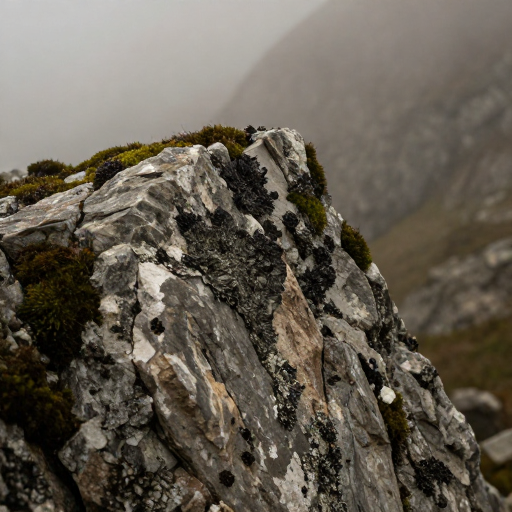

The Memory of the Peaks
Deep within the high altitudes, sounds are caught in the crevices of stone and the breath of the wind. This collection preserves the ephemeral acoustic textures of the high passes.

Deep within the high altitudes, sounds are caught in the crevices of stone and the breath of the wind. This collection preserves the ephemeral acoustic textures of the high passes.
